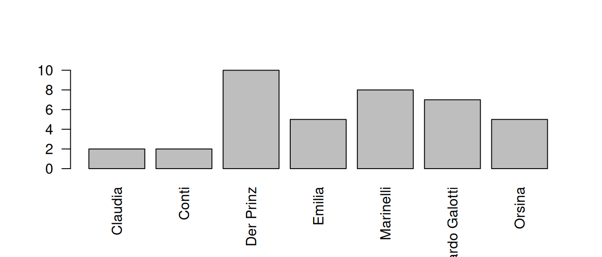
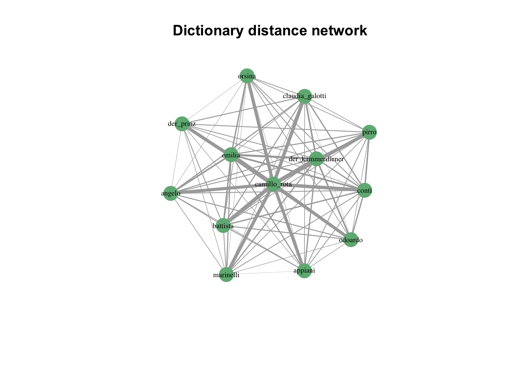
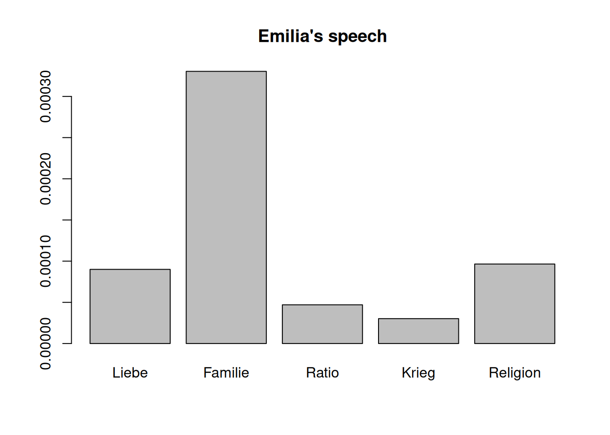
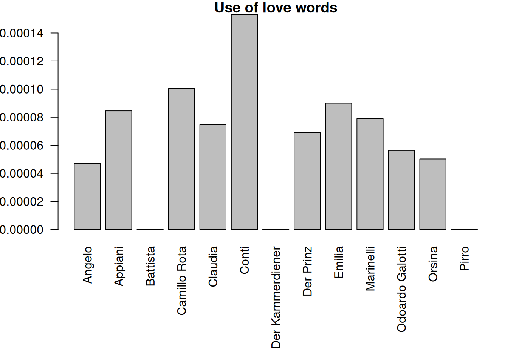
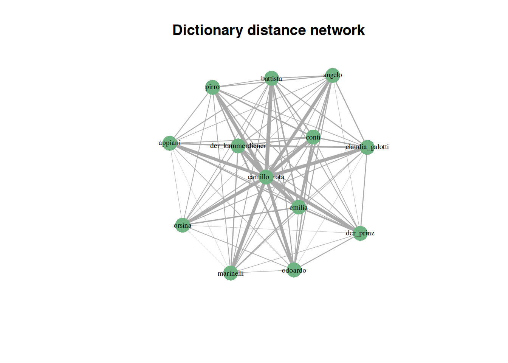
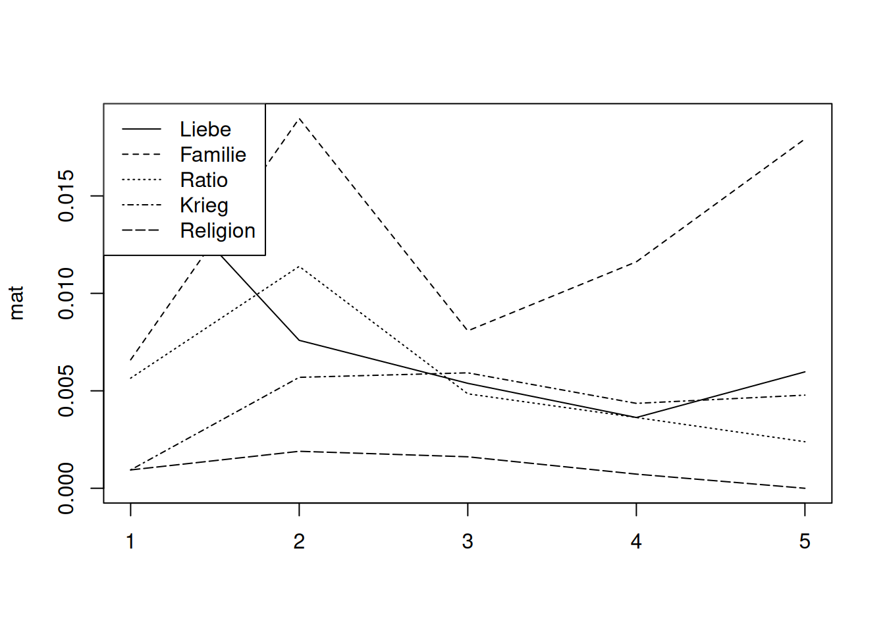
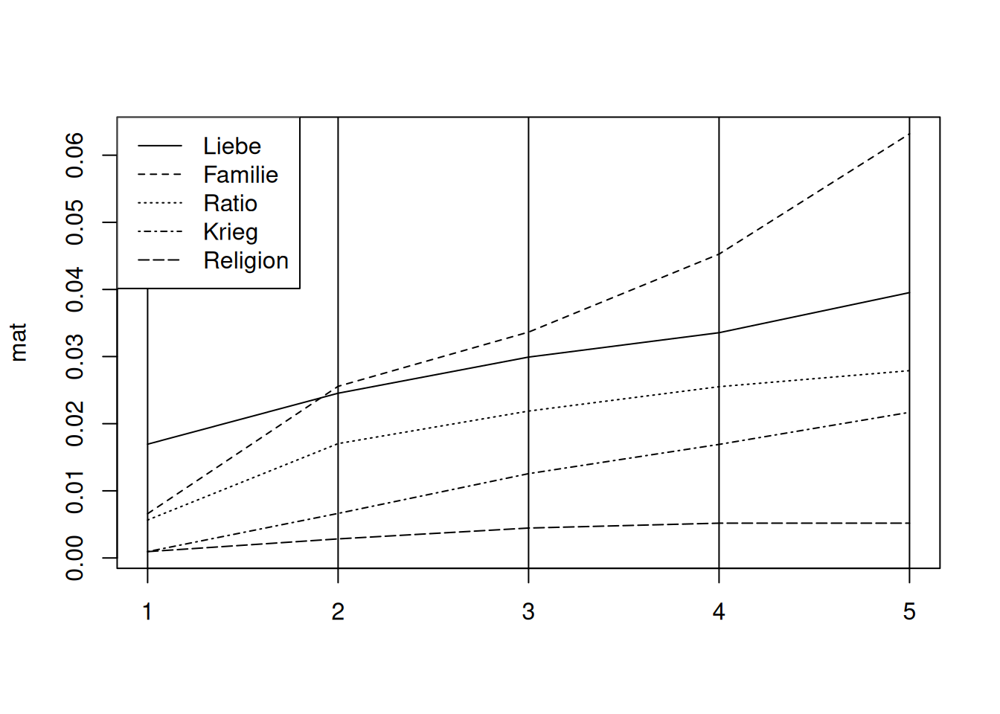
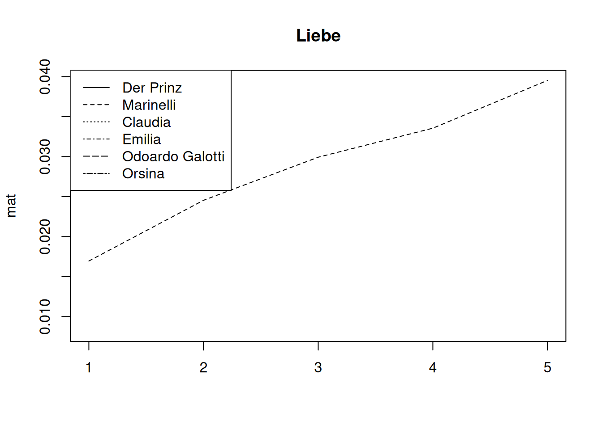
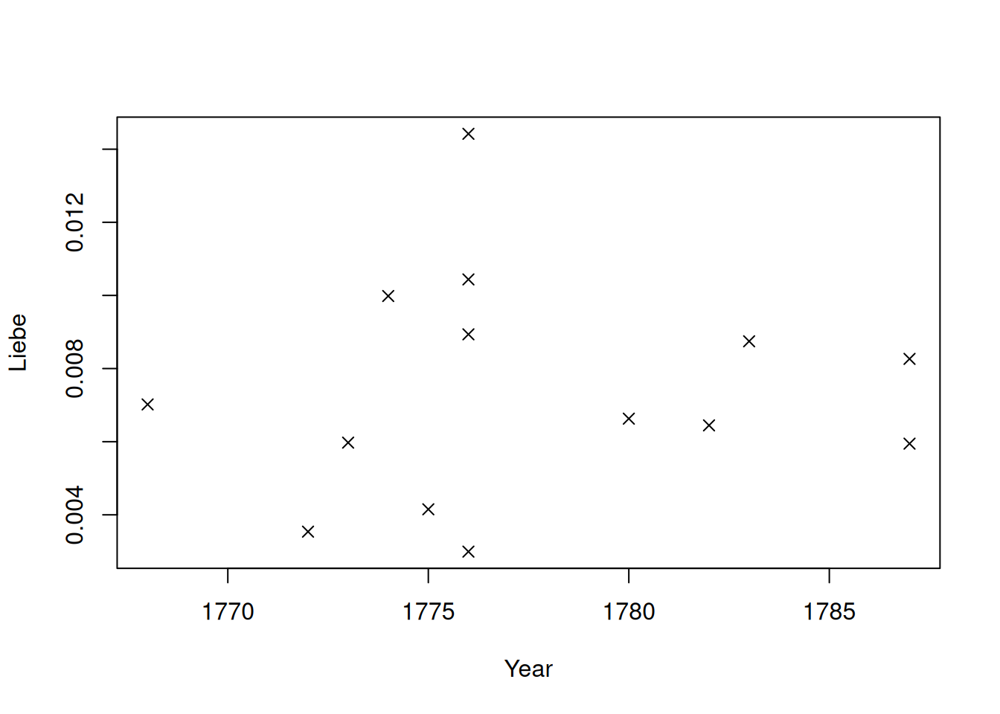
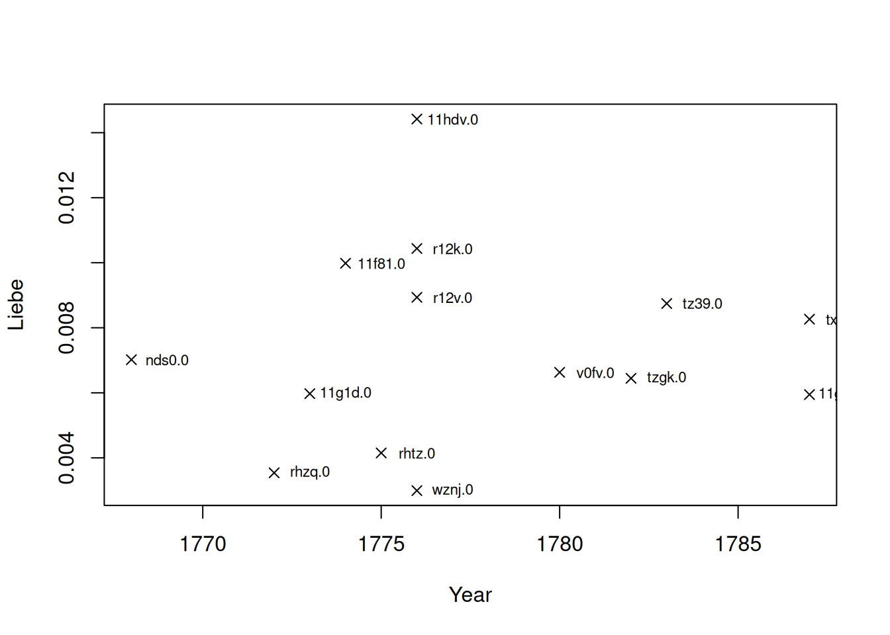

11 Word Field Analysis
What we consider a word field here may differ from specific uses in linguistics. In this context, a word field is a list of words that belong to a common theme / topic / semantic group. Multiple word fields can be assembled to create a dictionary. On a technical level, what we describe in the following works for arbitrary lists of words. A semantic relation between the words is technically not required. Thus, the following pieces of code can be used with arbitrary word lists.
For demo purposes (this is really a toy example), we will define the word field of Love as containing the words Liebe (love) and Herz (heart).
In R, we can put them in a character vector, and we use lemmas:
wf_love <- c("liebe", "herz")We will test this word field on Emilia Galotti, which should be about love.
data("rksp.0")11.1 Single word field
The core of the word field analysis is collecting statistics about a dictionary. Therefore, we use the function called dictionaryStatisticsSingle() (single, because we only want to analyse a single word field):
dictionaryStatisticsSingle(
rksp.0, # the text we want to process
wordfield=wf_love # the word field
)## corpus drama character x
## 1 test rksp.0 angelo 0
## 2 test rksp.0 appiani 0
## 3 test rksp.0 battista 0
## 4 test rksp.0 camillo_rota 0
## 5 test rksp.0 claudia_galotti 2
## 6 test rksp.0 conti 2
## 7 test rksp.0 der_kammerdiener 0
## 8 test rksp.0 der_prinz 10
## 9 test rksp.0 emilia 5
## 10 test rksp.0 marinelli 8
## 11 test rksp.0 odoardo 7
## 12 test rksp.0 orsina 5
## 13 test rksp.0 pirro 0What this table shows us the number of times the characters in the play use words that appear in this list. By default, these are absolute numbers.
We can visualise these counts in a simple bar chart:
# retrieve counts and replace character ids by names
dstat <- dictionaryStatisticsSingle(rksp.0, wordfield = wf_love) %>%
characterNames(rksp.0)
# remove characters not using these words at all
dstat <- dstat[dstat$x>0,]
# create a bar plot
barplot(dstat$x, # what to plot
names.arg = dstat$character, # x axis labels
las=2 # turn axis labels
)
Apparently, the prince and Marinelli are mentioning these words a lot more than the other characters.
When comparing characters, it often (but not always) makes sense to normalize the counts according to the total number of spoken words by a character. This can be enabled by setting the argument normalizeByCharacter=TRUE. This will divide the number of words in this field by the total number of words a character speaks.
dstat <- dictionaryStatisticsSingle(rksp.0, wordfield=wf_love,
normalizeByCharacter = TRUE # apply normalization
) %>% characterNames(rksp.0) # reformat character names
# remove figures not using these words at all
dstat <- dstat[dstat$x>0,]
barplot(dstat$x,
names.arg = dstat$character,
las=2
)
11.2 Multiple Word Fields
The function dictionaryStatistics() can be used to analyse multiple dictionaries at once. To this end, dictionaries are represented as lists of character vectors. The (named) outer list contains the keywords, the vectors are just words associated with the keyword.
New dictionaries can be easily created like this:
wf <- list(Liebe=c("liebe","herz","schmerz"), Hass=c("hass","hassen"))This dictionary contains the two entries Liebe (love) and Hass (hate), with 3 respective 2 entries. Dictionaries can be created in code, like shown above. In addition, the function loadFields() can be used to download dictionary content from a URL or a directory. By default, the function loads this dictionary from GitHub (that we used in publications), for the keywords Liebe and Familie (family). Since version 2.3.0, this dictionary is included in the package as base_dictionary and can be used right away (without internet connection). It is also the default dictionary used by dictionaryStatistics().
The function loadFields() offers parameters to load from different URLs via http or to load from plain text files that are stored locally. The latter can be achieved by specifying the directory as baseurl. Entries for each keyword should then be stored in a file named like the keyword, and ending with txt (by default, can be overwritten). See ?loadFields for details. Some of the options can also be specified through dictionaryStatistics(), as exemplified below.
The following examples use the base_dictionary, i.e., a specific version of the fields we have been using in QuaDramA.
dstat <- dictionaryStatistics(
rksp.0, # the text
fieldnames = # fields we want to measure (from base_dictionary)
c("Liebe", "Familie", "Ratio", "Krieg", "Religion"),
normalizeByCharacter = TRUE, # normalization by figure
normalizeByField = TRUE # normalization by field
)
dstat## corpus drama character Liebe Familie Ratio
## 1 test rksp.0 angelo 4.707211e-05 6.061341e-05 6.828362e-05
## 2 test rksp.0 appiani 8.450546e-05 1.450870e-04 6.537871e-05
## 3 test rksp.0 battista 0.000000e+00 1.349619e-04 0.000000e+00
## 4 test rksp.0 camillo_rota 1.003613e-04 1.292324e-04 4.367575e-04
## 5 test rksp.0 claudia_galotti 7.467219e-05 2.307678e-04 3.899548e-05
## 6 test rksp.0 conti 1.531692e-04 5.379043e-05 3.635835e-05
## 7 test rksp.0 der_kammerdiener 0.000000e+00 0.000000e+00 0.000000e+00
## 8 test rksp.0 der_prinz 6.896790e-05 6.660598e-05 5.002301e-05
## 9 test rksp.0 emilia 9.004061e-05 3.304367e-04 4.702121e-05
## 10 test rksp.0 marinelli 7.894143e-05 1.524759e-04 4.580552e-05
## 11 test rksp.0 odoardo 5.635355e-05 2.257573e-04 6.267303e-05
## 12 test rksp.0 orsina 5.028230e-05 1.109950e-04 5.314227e-05
## 13 test rksp.0 pirro 0.000000e+00 1.871398e-04 5.059705e-05
## Krieg Religion
## 1 5.267594e-05 0.000000e+00
## 2 4.728281e-05 0.000000e+00
## 3 0.000000e+00 0.000000e+00
## 4 8.423181e-05 0.000000e+00
## 5 4.595895e-05 8.209574e-05
## 6 2.337322e-05 0.000000e+00
## 7 0.000000e+00 0.000000e+00
## 8 2.894188e-05 3.791218e-05
## 9 3.022792e-05 9.651721e-05
## 10 3.943715e-05 1.859773e-05
## 11 4.992433e-05 5.679295e-05
## 12 3.014373e-05 1.184596e-05
## 13 2.439500e-05 9.586809e-05The variable dstat now contains multiple columns, one for each word field. We have been using the option normalizeByCharacter before. When comparing multiple fields, it often happens that they have a different size (i.e., different number of words). In this case, it makes sense to also normalize with the number of words in the word field. This is achieved by normalizeByField=TRUE. This makes the numbers very small, but they should be used in comparison anyway.
11.2.1 Bar plot by character
It is now straightforward to show the distribution of fields for a single character:
mat <- as.matrix(dstat)
barplot(mat[9,], # we select Emilia's line
main="Emilia's speech",
names.arg=colnames(mat)
)
11.2.2 Bar plot by field
Conversely, we can also show who uses words of a certain field how often:
dstat <- dictionaryStatistics(
rksp.0, # the text
fieldnames = # fields we want to measure (from base_dictionary)
c("Liebe", "Familie", "Ratio", "Krieg", "Religion"),
normalizeByCharacter = TRUE, # normalization by figure
normalizeByField = TRUE # normalization by field
) %>%
characterNames(rksp.0)
mat <- as.matrix(dstat)
par(mar=c(9,4,1,1))
barplot(mat[,1], # Select the row for 'love'
main="Use of love words", # title for plot
beside = TRUE, # not stacked
names.arg = dstat$character, # x axis labels
las=2 # rotation for labels
)
11.3 Dictionary Based Distance
Technically, the output of dictionaryStatistics() is a data.frame. This is suitable for most uses. In some cases, however, it’s more suited to work with a matrix that only contains the raw numbers (i.e., number of family words). Calculating character distance based on dictionaries, for instance. For these cases, the package provides an S3 method that extracts the numeric part of the data.frame and creates a matrix. We have used this function as.matrix() already above.
The matrix doesn’t have row names by default. The snippet below can be used to add row names.
ds <- dictionaryStatistics(rksp.0,
fieldnames=c("Liebe", "Familie", "Ratio", "Krieg", "Religion"),
normalizeByCharacter=TRUE)
m <- as.matrix(ds)
rownames(m) <- ds$character
m## Liebe Familie Ratio Krieg Religion
## angelo 0.004424779 0.004424779 0.007374631 0.005899705 0.0000000000
## appiani 0.007943513 0.010591350 0.007060900 0.005295675 0.0000000000
## battista 0.000000000 0.009852217 0.000000000 0.000000000 0.0000000000
## camillo_rota 0.009433962 0.009433962 0.047169811 0.009433962 0.0000000000
## claudia_galotti 0.007019186 0.016846046 0.004211511 0.005147403 0.0046794572
## conti 0.014397906 0.003926702 0.003926702 0.002617801 0.0000000000
## der_kammerdiener 0.000000000 0.000000000 0.000000000 0.000000000 0.0000000000
## der_prinz 0.006482982 0.004862237 0.005402485 0.003241491 0.0021609941
## emilia 0.008463817 0.024121879 0.005078290 0.003385527 0.0055014812
## marinelli 0.007420495 0.011130742 0.004946996 0.004416961 0.0010600707
## odoardo 0.005297234 0.016480283 0.006768687 0.005591524 0.0032371984
## orsina 0.004726536 0.008102633 0.005739365 0.003376097 0.0006752194
## pirro 0.000000000 0.013661202 0.005464481 0.002732240 0.0054644809Every character is now represented with five numbers, which can be interpreted as a vector in five-dimensional space. This means, we can easily apply distance metrics supplied by the function dist() (from the default package stats). By default, dist() calculates Euclidean distance.
cdist <- dist(m)
# output not shownThe resulting data structure is similar to the one in the weighted configuration matrix, which means everything from Section 5.2.2 can be applied here. In particular, we can convert these distances into a network:
require(igraph)
g <- graph_from_adjacency_matrix(as.matrix(cdist),
weighted=TRUE, # weighted graph
mode="undirected", # no direction
diag=FALSE # no looping edges
)This network can of course be visualised again.
# Now we plot
plot.igraph(g,
layout=layout_with_fr, # how to lay out the graph
main="Dictionary distance network", # title
vertex.label.cex=0.6, # label size
vertex.label.color="black", # font color
vertex.color=qd.colors[5], # vertex color
vertex.frame.color=NA, # no vertex border
edge.width=E(g)$weight*100 # scale edges according to their weight
# (since the distances are so small, we multiply)
) 
Although this network is similar to the one shown in Section 5.2.2 (both undirected and weighted), it displays a totally different kind of information. The networks based on copresence connect characters that appear together on stage, while this network connects characters with similar thematic profile in their speech (within the limits of being able to detect thematic profiles via word fields).
11.4 Development over the course of the play
Finally, the function dictionaryStatistics() can be used to track word field for segments of the play. To do that, we use the parameter segment, and set it to either “Act” or “Scene”.
11.4.1 Individual characters
We can now plot the theme progress over the course of the play. This can be done for specific characters, as shown below.
dsl <- dictionaryStatistics(rksp.0,
fieldnames=c("Liebe", "Familie", "Ratio", "Krieg", "Religion"),
normalizeByCharacter=TRUE,
segment="Act")
mat <- as.matrix(dsl[dsl$character=="marinelli",])
matplot(mat, type="l", col="black")
legend(x="topleft",legend=colnames(mat), lty=1:ncol(dsl))
Depending on the use case, it might be easier to interpret if the numbers are cumulatively added up. The snippet below shows how this works.
dsl <- dictionaryStatistics(rksp.0,
fieldnames=c("Liebe", "Familie", "Ratio", "Krieg", "Religion"),
normalizeByCharacter=TRUE,
segment="Act")
mat <- as.matrix(dsl[dsl$character=="marinelli",])
mat <- apply(mat,2,cumsum)
matplot(mat, type="l", col="black")
# Add act lines
abline(v=1:nrow(mat))
legend(x="topleft", legend=colnames(mat), lty=1:5)
11.4.2 Comparing characters
Simultaneously to the setting above, we now want to compare the development of several characters for a single word field. This unfortunately requires some reshuffling of the data, using the function reshape (from the stats package).
dsl <- dictionaryStatistics(rksp.0,
fieldnames=c("Liebe"),
normalizeByCharacter=TRUE,
segment="Act") %>%
filterCharacters(rksp.0,
n = 6) %>%
characterNames(rksp.0)
dsl <- reshape(dsl, direction = "wide", # the table becomes wider
timevar = "Number.Act", # the column that specifies multiple readings
times = "Liebe", # the number to distribute
idvar=c("corpus","drama","character") # what identifies a character
)
mat <- as.matrix.data.frame(dsl[,4:ncol(dsl)])
rownames(mat) <- dsl$character
mat <- apply(mat,1,cumsum)
matplot(mat, type="l", lty = 1:ncol(mat), col="black", main="Liebe")
legend(x="topleft", legend=colnames(mat), lty=1:ncol(mat))
11.5 Corpus Analysis
Finally, we will do word field analysis with a small corpus. The following snippet creates a vector with ids for plays from the Sturm und Drang period. Providing this vector as an argument for the loadDrama() function loads them all as a single QDDrama object. To reproduce this, you will need to install the quadrama corpus first, which can be done by executing installData("qd").
sturm_und_drang.ids <- c("qd:11f81.0", "qd:11g1d.0", "qd:11g9w.0",
"qd:11hdv.0", "qd:nds0.0", "qd:r12k.0",
"qd:r12v.0", "qd:r134.0", "qd:r13g.0",
"qd:rfxf.0", "qd:rhtz.0", "qd:rhzq.0",
"qd:rj22.0", "qd:tx4z.0", "qd:tz39.0",
"qd:tzgk.0", "qd:v0fv.0", "qd:wznj.0",
"qd:tx4z.0", "qd:rfxf.0")
sturm_und_drang.plays <- loadDrama(sturm_und_drang.ids)## Warning in loadDrama(sturm_und_drang.ids): 59 spoken words are not assigned to a
## character (NA values). They have been removed to prevent subsequent issues.The resulting table is reproduced here in readable formatting:
knitr::kable(sturm_und_drang.plays$meta)| corpus | drama | documentTitle | language | Name | Pnd | Translator.Name | Translator.Pnd | Date.Written | Date.Printed | Date.Premiere | Date.Translation |
|---|---|---|---|---|---|---|---|---|---|---|---|
| qd | 11f81.0 | Clavigo | de | Goethe, Johann Wolfgang | 118540238 | NA | NA | 1774 | 1774 | 1774 | NA |
| qd | 11g1d.0 | Götz von Berlichingen mit der eisernen Hand | de | Goethe, Johann Wolfgang | 118540238 | NA | NA | NA | 1773 | NA | NA |
| qd | 11g9w.0 | Egmont | de | Goethe, Johann Wolfgang | 118540238 | NA | NA | 1787 | 1788 | 1791 | NA |
| qd | 11hdv.0 | Stella | de | Goethe, Johann Wolfgang | 118540238 | NA | NA | 1776 | 1776 | 1776 | NA |
| qd | nds0.0 | Ugolino | de | Gerstenberg, Heinrich Wilhelm von | 118690949 | NA | NA | NA | 1768 | 1769 | NA |
| qd | r12k.0 | Sturm und Drang | de | Klinger, Friedrich Maximilian | 118563319 | NA | NA | 1776 | NA | NA | NA |
| qd | r12v.0 | Die Zwillinge | de | Klinger, Friedrich Maximilian | 118563319 | NA | NA | NA | 1776 | 1776 | NA |
| qd | r134.0 | Die neue Arria | de | Klinger, Friedrich Maximilian | 118563319 | NA | NA | NA | NA | NA | NA |
| qd | r13g.0 | Simsone Grisaldo | de | Klinger, Friedrich Maximilian | 118563319 | NA | NA | NA | NA | NA | NA |
| qd | rfxf.0 | Julius von Tarent | de | Leisewitz, Johann Anton | 118571370 | NA | NA | NA | NA | NA | NA |
| qd | rhtz.0 | Die Soldaten | de | Lenz, Jakob Michael Reinhold | 118571656 | NA | NA | 1775 | 1776 | 1863 | NA |
| qd | rhzq.0 | Der Hofmeister oder Vorteile der Privaterziehung | de | Lenz, Jakob Michael Reinhold | 118571656 | NA | NA | 1772 | 1774 | NA | NA |
| qd | rj22.0 | Der neue Menoza | de | Lenz, Jakob Michael Reinhold | 118571656 | NA | NA | NA | NA | NA | NA |
| qd | tx4z.0 | Don Carlos, Infant von Spanien | de | Schiller, Friedrich | 118607626 | NA | NA | 1787 | 1787 | 1787 | NA |
| qd | tz39.0 | Kabale und Liebe | de | Schiller, Friedrich | 118607626 | NA | NA | 1783 | NA | NA | NA |
| qd | tzgk.0 | Die Verschwörung des Fiesco zu Genua | de | Schiller, Friedrich | 118607626 | NA | NA | 1782 | NA | NA | NA |
| qd | v0fv.0 | Die Räuber | de | Schiller, Friedrich | 118607626 | NA | NA | 1780 | 1781 | 1882 | NA |
| qd | wznj.0 | Die Kindermörderin | de | Wagner, Heinrich Leopold | 11862833X | NA | NA | 1776 | NA | 1777 | NA |
For the sake of demo, we will use the base_dictionary that is included in the R package. It contains entries for the fields Familie, Krieg, Ratio, Liebe, Religion. Typing base_dictionary in the R console shows all words in all five fields. For loading other dictionaries, see above.
Counting word frequencies on a corpus works exactly as on a single text.
dictionaryStatistics(sturm_und_drang.plays,
fieldnames=names(base_dictionary),
byCharacter = FALSE)## corpus drama Familie Krieg Ratio Liebe Religion
## 1 qd 11f81.0 169 48 100 161 48
## 2 qd 11g1d.0 158 184 107 189 142
## 3 qd 11g9w.0 140 184 120 174 80
## 4 qd 11hdv.0 119 27 41 208 77
## 5 qd nds0.0 293 47 51 126 107
## 6 qd r12k.0 217 87 68 215 59
## 7 qd r12v.0 349 143 49 192 65
## 8 qd r134.0 136 96 92 387 75
## 9 qd r13g.0 87 164 108 358 77
## 10 qd rfxf.0 506 168 220 430 160
## 11 qd rhtz.0 184 55 106 66 46
## 12 qd rhzq.0 362 77 126 100 115
## 13 qd rj22.0 218 51 96 116 102
## 14 qd tx4z.0 604 380 554 748 420
## 15 qd tz39.0 463 123 196 284 199
## 16 qd tzgk.0 220 231 159 210 115
## 17 qd v0fv.0 399 206 227 304 245
## 18 qd wznj.0 270 37 132 81 95In order to visualize this in a time line, we need to merge this table with the meta data table. This can be done easily with the merge() function. This function is quite handy in our use cases, as it can merge tables based on values in the table. In our case, we mostly want to merge tables that both have a corpus and drama column. If the two tables have columns with the same name, this is done automatically. Otherwise, one can specify the columns using the arguments by, by.x and/or by.y.
As the data contains three different types of date (written, printed, premiere), and not all plays have all dates, we create an artificial reference date by taking the earliest date possible. This is done using the apply function in the code below, and by taking the minimum value in each row.
After that, the table is ordered by this reference date, and the plotting itself can be done with regular plot() function provided by R.
# count the words (as before)
dstat <- dictionaryStatistics(sturm_und_drang.plays,
fieldnames=names(base_dictionary),
byCharacter = FALSE,
normalizeByCharacter = TRUE)
# merge them with the meta object
dstat <- merge(dstat, sturm_und_drang.plays$meta)
# for each play, take the earliest date available
# (not all plays have all kinds of date)
dstat$Date.Ref <- apply(dstat[,c("Date.Printed", "Date.Written", "Date.Premiere")],
1, min, na.rm=TRUE)## Warning in FUN(newX[, i], ...): no non-missing arguments to min; returning Inf
## Warning in FUN(newX[, i], ...): no non-missing arguments to min; returning Inf
## Warning in FUN(newX[, i], ...): no non-missing arguments to min; returning Inf
## Warning in FUN(newX[, i], ...): no non-missing arguments to min; returning Inf# order them by this reference date
dstat <- dstat[order(dstat$Date.Ref),]
# plot them
plot(Liebe ~ Date.Ref, # y ~ x
data = dstat[dstat$Date.Ref!=Inf,], # the data set, filtering Inf values
pch = 4, # we print a cross (see ?points for other options)
xlab="Year" # label of the x axis
)
The resulting plot shows the percentage of love-words in each play, organized by reference date. Thus, in 1776, a very “lovely” play has been published, achieving over 1.8 percent of love words (it’s Stella by Goethe). The identification of plays in this plot can be simplified if we plot not only crosses/points, but some kind of identifier. In the plot below, we use the textgrid id of the play (which we also use in QuaDramA, because it’s relatively short and still memorable).
# it makes use of the text() function much easier if we have
# a new variable for this filtered data set
dstat.filtered <- dstat[dstat$Date.Ref!=Inf,]
plot(Liebe ~ Date.Ref, # y ~ x
data = dstat.filtered, # the data set
pch = 4, # we print a cross (see ?points for other options)
xlab="Year" # label of the x axis
)
text(x = dstat.filtered$Date.Ref+1,
y = dstat.filtered$Liebe,
labels=dstat.filtered$drama,
cex=0.7)
For publication, one might want to replace the ids with actual names. This can be done with the function dramaNames() (not shown here).